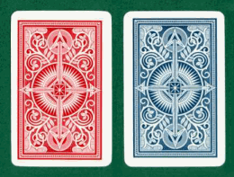
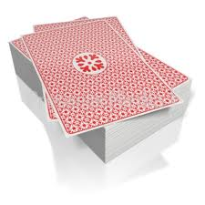

Two objects are coplanar if they both lie in the same plane. In the applet above, there are 16 coplanar points. They are coplanar because they all lie in the same plane as indicated by the yellow area.
If you uncheck the 'coplanar' checkbox, the points are then randomly spread out in space and are therefore not coplanar*.

It's not just points that can be coplanar. Imagine some playing cards laying side by side on a tabletop, they are coplanar, because they both are in the same plane as each other.In the image above, the two cards are both laying on a green surface. You can think of the green surface as a plane, and because the two cards are on that plane they are coplanar.
* Each time you uncheck the box a different set of random points is produced.

In the deck of cards on the right none of the cards are coplanar.
Each card is in a plane of its own, and although those planes are parallel to each other, that does not count as being in the same plane. So in the deck we have 52 separate (but parallel) planes with one card in each plane.
To make the cards coplanar, you would have to lay them all out on a table with no overlaps.
Any set of three points are always coplanar. Put another way, you can always find a plane that passes through any set of three points. Same for a set of two points.
This is similar to the idea that in two dimensions, two points are always collinear - you can always draw a line through any two points.
Recall that points are collinear if they all lie on a straight line. Coplanar is the 3D version of this, where they all lie in the same plane.